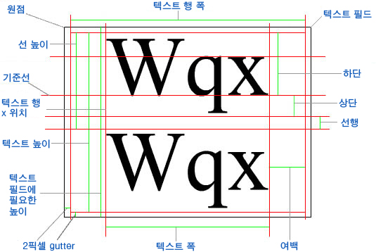

| 패키지 | flash.text |
| 클래스 | public class TextLineMetrics |
| 상속 | TextLineMetrics |
| 언어 버전: | ActionScript 3.0 |
| 런타임 버전: | AIR 1.0, Flash Player 9, Flash Lite 4 |
flash.text.TextField.getLineMetrics() 메서드로 반환됩니다.
다이어그램의 "Text Field height" 치수와 같이 텍스트 행이 포함된 텍스트 필드와 관련된 치수는 flash.text.TextField를 참조하십시오.
아래 다이어그램에서는 텍스트 필드 및 필드에 포함된 텍스트 행의 위치와 치수를 보여 줍니다.

관련 API 요소
 상속되는 공용 속성 숨기기
상속되는 공용 속성 숨기기 상속되는 공용 속성 표시
상속되는 공용 속성 표시| 속성 | 정의 주체 | ||
|---|---|---|---|
| ascent : Number
텍스트의 ascent 값은 기준선에서 행 높이 맨 위까지의 거리를 픽셀 단위로 나타낸 값입니다. | TextLineMetrics | ||
 | constructor : Object
지정된 객체 인스턴스의 클래스 객체 또는 생성자 함수에 대한 참조입니다. | Object | |
| descent : Number
텍스트의 descent 값은 기준선에서 행 깊이 맨 아래까지의 거리를 픽셀 단위로 나타낸 값입니다. | TextLineMetrics | ||
| height : Number
선택한 행에 있는 텍스트의 높이 값을 픽셀 단위로 나타낸 값입니다. 선택한 행은 전체 텍스트가 아닐 수도 있습니다. | TextLineMetrics | ||
| leading : Number
leading 값은 텍스트 행 사이의 세로 거리를 나타냅니다. | TextLineMetrics | ||
| width : Number
width 값은 선택한 행의 텍스트 폭을 픽셀 단위로 나타낸 값입니다. 선택한 행은 전체 텍스트가 아닐 수도 있습니다. | TextLineMetrics | ||
| x : Number
x 값은 첫 문자의 왼쪽 위치를 픽셀 단위로 나타낸 값입니다. | TextLineMetrics | ||
| 메서드 | 정의 주체 | ||
|---|---|---|---|
TextLineMetrics(x:Number, width:Number, height:Number, ascent:Number, descent:Number, leading:Number)
TextLineMetrics 객체를 만듭니다. | TextLineMetrics | ||
|
지정된 속성이 객체에 정의되어 있는지 여부를 나타냅니다. | Object | |
|
Object 클래스의 인스턴스가 매개 변수로 지정된 객체의 프로토타입 체인에 있는지 여부를 나타냅니다. | Object | |
|
지정된 속성이 존재하고 열거 가능한지 여부를 나타냅니다. | Object | |
|
루프 작업에서 동적 속성을 사용할 수 있는지 여부를 설정합니다. | Object | |
|
로캘별 규칙에 따라 서식이 지정된 이 객체의 문자열 표현을 반환합니다. | Object | |
|
지정된 객체의 문자열 표현을 반환합니다. | Object | |
|
지정된 객체의 프리미티브 값을 반환합니다. | Object | |
ascent | 속성 |
public var ascent:Number| 언어 버전: | ActionScript 3.0 |
| 런타임 버전: | AIR 1.0, Flash Player 9, Flash Lite 4 |
텍스트의 ascent 값은 기준선에서 행 높이 맨 위까지의 거리를 픽셀 단위로 나타낸 값입니다. 자세한 내용은 이 클래스의 개요 다이어그램에서 "Ascent" 치수를 참조하십시오.
관련 API 요소
descent | 속성 |
public var descent:Number| 언어 버전: | ActionScript 3.0 |
| 런타임 버전: | AIR 1.0, Flash Player 9, Flash Lite 4 |
텍스트의 descent 값은 기준선에서 행 깊이 맨 아래까지의 거리를 픽셀 단위로 나타낸 값입니다. 자세한 내용은 이 클래스의 개요 다이어그램에서 "Descent" 치수를 참조하십시오.
관련 API 요소
height | 속성 |
public var height:Number| 언어 버전: | ActionScript 3.0 |
| 런타임 버전: | AIR 1.0, Flash Player 9, Flash Lite 4 |
선택한 행에 있는 텍스트의 높이 값을 픽셀 단위로 나타낸 값입니다. 선택한 행은 전체 텍스트가 아닐 수도 있습니다. 텍스트 행의 높이에는 제본용 여백 높이가 포함되지 않습니다. 자세한 내용은 이 클래스의 개요 다이어그램에서 "Line height" 치수를 참조하십시오.
관련 API 요소
leading | 속성 |
public var leading:Number| 언어 버전: | ActionScript 3.0 |
| 런타임 버전: | AIR 1.0, Flash Player 9, Flash Lite 4 |
leading 값은 텍스트 행 사이의 세로 거리를 나타냅니다. 자세한 내용은 이 클래스의 개요 다이어그램에서 "Leading" 치수를 참조하십시오.
관련 API 요소
width | 속성 |
public var width:Number| 언어 버전: | ActionScript 3.0 |
| 런타임 버전: | AIR 1.0, Flash Player 9, Flash Lite 4 |
width 값은 선택한 행의 텍스트 폭을 픽셀 단위로 나타낸 값입니다. 선택한 행은 전체 텍스트가 아닐 수도 있습니다. 텍스트 행의 폭은 텍스트 필드의 폭과 다릅니다. 텍스트 행의 폭은 텍스트 필드 폭의 양쪽에서 2픽셀씩 모두 4픽셀의 제본용 여백 폭을 뺀 크기를 기준으로 합니다. 자세한 내용은 이 클래스의 개요 다이어그램에서 "Text Line width" 치수를 참조하십시오.
관련 API 요소
x | 속성 |
public var x:Number| 언어 버전: | ActionScript 3.0 |
| 런타임 버전: | AIR 1.0, Flash Player 9, Flash Lite 4 |
x 값은 첫 문자의 왼쪽 위치를 픽셀 단위로 나타낸 값입니다. 이 값에는 여백, 들여쓰기(설정된 경우) 및 제본용 여백 폭이 포함됩니다. 자세한 내용은 이 클래스의 개요 다이어그램에서 "Text Line x-position"을 참조하십시오.
관련 API 요소
TextLineMetrics | () | 생성자 |
public function TextLineMetrics(x:Number, width:Number, height:Number, ascent:Number, descent:Number, leading:Number)| 언어 버전: | ActionScript 3.0 |
| 런타임 버전: | AIR 1.0, Flash Player 9, Flash Lite 4 |
TextLineMetrics 객체를 만듭니다. TextLineMetrics 객체에는 텍스트 필드의 텍스트 행에 대한 텍스트 메트릭 관련 정보가 들어 있습니다. 이 클래스의 객체는 flash.text.TextField.getLineMetrics() 메서드로 반환됩니다.
관련 속성에 대한 자세한 내용은 이 클래스의 개요 부분에 있는 다이어그램을 참조하십시오.
매개 변수x:Number — 첫 번째 문자의 왼쪽 위치(픽셀 단위)입니다.
| |
width:Number — 선택한 행의 텍스트 폭(픽셀 단위)입니다. 선택한 행은 전체 텍스트가 아닐 수도 있습니다.
| |
height:Number — 선택한 행의 텍스트 높이(픽셀 단위)입니다. 선택한 행은 전체 텍스트가 아닐 수도 있습니다.
| |
ascent:Number — 기준선에서 행 높이 맨 위까지의 길이(픽셀 단위)입니다.
| |
descent:Number — 기준선에서 행 깊이 맨 아래까지의 길이(픽셀 단위)입니다.
| |
leading:Number — 텍스트 행 사이의 세로 간격을 나타내는 치수입니다.
|
관련 API 요소
- TextField 유형의
label이라는 속성을 만듭니다. - 생성자에서
configureAssets()을 호출하여 다음을 수행합니다.- 스테이지를 왼쪽 위 정렬 및 배율 없음으로 설정합니다.
label이라는 새 TextField 객체를 만듭니다.label의 배경을 활성화하고 색상을 흰색으로 설정합니다.- 자동 줄 바꿈을 사용하여
label의 텍스트가 여러 행으로 확장될 수 있도록 합니다. getLabelText()를 호출한 결과를label의text속성에 할당합니다.getLabelText()메서드는 XML 유형의 변수를 만들어 이름이body인 XML 노드에 할당합니다. 이 노드는 긴 문장으로 채워집니다.addChild()를 사용하여label을 표시 목록에 추가합니다.
- 스테이지에서 수행되는
resize이벤트를 수신하는resizeHandler()라는 메서드를 추가합니다. Flash Player 윈도우 크기가 변경될 때마다RESIZE이벤트가 전달되고 다음 동작이 발생합니다.draw()가 호출되어label가 스테이지 가운데 나타나고 10픽셀 버퍼로 둘러싸입니다.setTimeout()을 통해 짧은 지연 시간 후showMetrics()가 실행됩니다. 지연 시간을 추가하는 이유는RESIZE이벤트가 완료되어 스테이지가 완전히 다시 그려질 때까지 행 메트릭이 업데이트되지 않기 때문입니다.showMetrics()에서metrics라는 TextLineMetrics 변수를getLineMetrics()호출 결과에 할당한 다음 이 변수를reader라는 LineMetricsReader 인스턴스의 새 인스턴스에 전달합니다. 그런 다음trace()호출 내에서 두 변수가 사용되어label의 첫 번째(유일한) 행과 LineMetricsReader 인스턴스의toString()메서드를 통해 제공된 정보를 인쇄합니다.
- 생성자에서
resize이벤트를 한 번 전달하여 SWF 파일이 처음 로드될 때label을 올바르게 그립니다.
package {
import flash.display.Sprite;
import flash.display.StageAlign;
import flash.display.StageScaleMode;
import flash.events.*;
import flash.text.TextField;
import flash.text.TextLineMetrics;
import flash.utils.setTimeout;
public class TextLineMetricsExample extends Sprite {
private var gutter:int = 10;
private var label:TextField;
public function TextLineMetricsExample() {
configureAssets();
configureListeners();
resizeHandler(new Event(Event.RESIZE));
}
private function showMetrics():void {
var metrics:TextLineMetrics = label.getLineMetrics(0);
var reader:LineMetricsReader = new LineMetricsReader(metrics);
trace("lineText: " + label.getLineText(0));
trace("metrics: " + reader);
}
private function configureAssets():void {
stage.align = StageAlign.TOP_LEFT;
stage.scaleMode = StageScaleMode.NO_SCALE;
label = new TextField();
label.background = true;
label.backgroundColor = 0xFFFFFF;
label.multiline = true;
label.wordWrap = true;
label.text = getLabelText();
addChild(label);
}
private function configureListeners():void {
stage.addEventListener(Event.RESIZE, resizeHandler);
}
private function resizeHandler(event:Event):void {
draw();
setTimeout(showMetrics, 100);
}
private function draw():void {
label.x = gutter;
label.y = gutter;
label.width = stage.stageWidth - (gutter * 2);
label.height = stage.stageHeight - (gutter * 2);
}
private function getLabelText():String {
var text:XML = <body>The Flex product line enables developers to build rich Internet applications that blend the responsiveness of desktop software, the cross-platform reach of the web, and the expressiveness of the Flash Platform.</body>
return text.toString();
}
}
}
import flash.text.TextLineMetrics;
class LineMetricsReader {
private var metrics:TextLineMetrics;
public function LineMetricsReader(metrics:TextLineMetrics) {
this.metrics = metrics;
}
public function toString():String {
return "[TextLineMetrics ascent:" + metrics.ascent
+ ", descent:" + metrics.descent
+ ", leading:" + metrics.leading
+ ", width:" + metrics.width
+ ", height:" + metrics.height
+ ", x:" + metrics.x
+ "]";
}
}
Tue Jun 12 2018, 03:17 PM Z